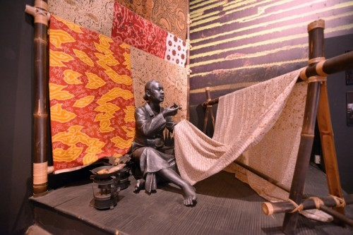
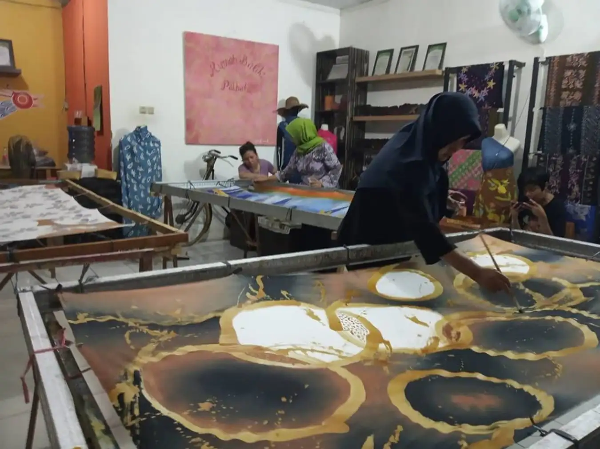
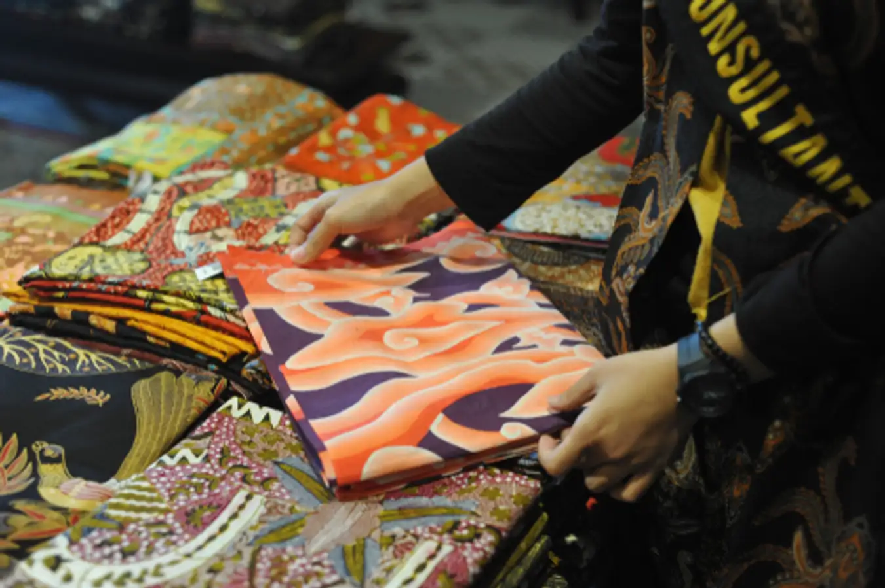
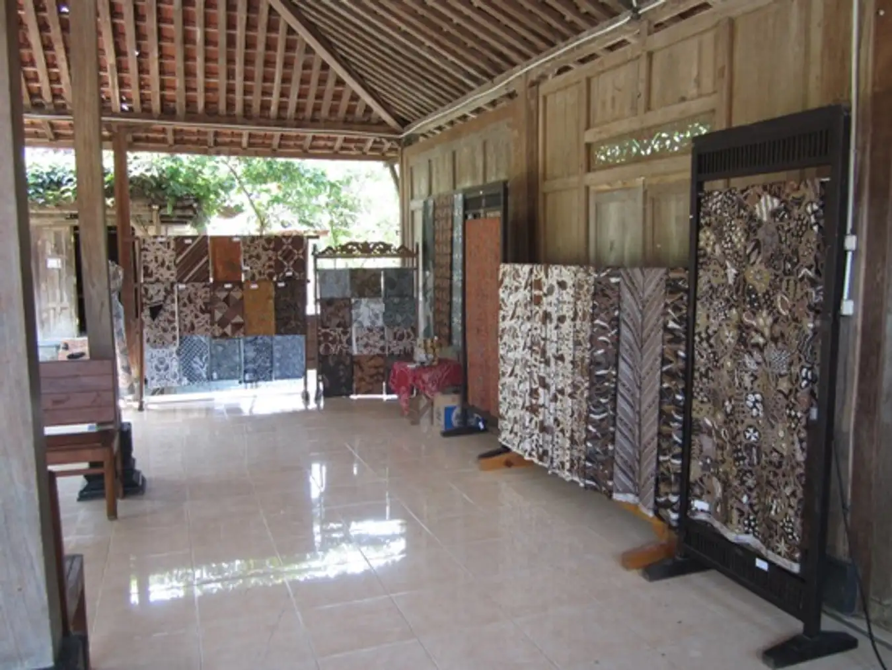
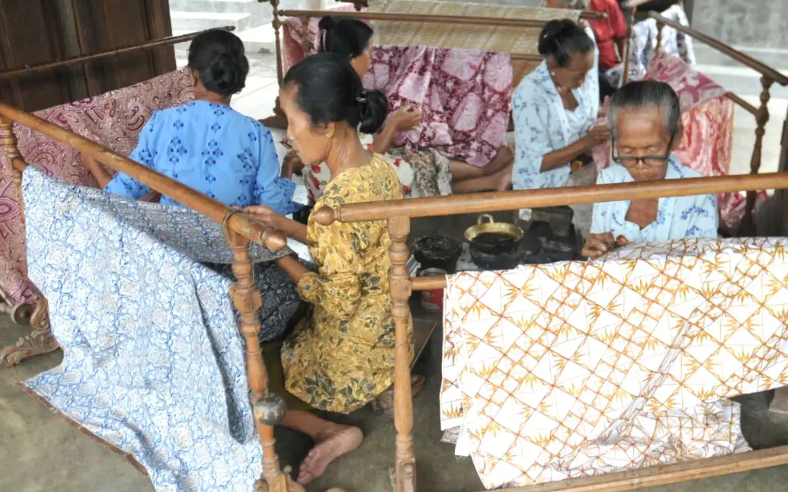

Tempat Wisata Batik di Indonesia

Indonesia merupakan salah satu negara dengan kekayaan budaya paling beragam. Sayangnya, masih belum banyak orang yang tahu bahwa wisata budaya di Indonesia bisa lebih dari sekadar mengamati sejarah dan mendengarkan cerita. Sebagai contoh, batik. Batik adalah salah satu budaya yang dapat dinikmati dan dipelajari lebih dalam. Batik tidak hanya sekadar untuk digunakan, namun juga menarik untuk dipelajari. Bagi para wisatawan, tersedia beberapa destinasi wisata yang mengenalkan dan menawarkan proses membatik sebagai aktivitas selama berwisata. Jadi, bukan hanya sekadar melihat, wisatawan dapat ikut berinteraksi dan mencoba langsung membuat batik di atas kain dan menjadi bagian dari proses pembuatan batik. Bahkan, bisa juga membawanya pulang sebagai oleh-oleh.
1. Rumah Batik Palbatu, Jakarta

Jika mendengar kata batik, pasti kota Solo, Yogyakarta, dan Pekalongan langsung terbesit di pikiran. Tahukah kamu bahwa Jakarta juga memiliki destinasi wisata Batik, yaitu di Rumah Batik Palbatu. Wisata Jakarta yang berlokasi di Tebet, Jakarta Selatan ini akan mengajakmu melihat proses pembuatan batik bahkan kamu juga bisa belajar membatik. Rumah Batik Palbatu menghadirkan motif batik dengan ikon khas Betawi berwarna cerita. Kamu bisa mengunjungi tempat wisata di Jakarta ini setiap harinya pukul 09.00-17.00. Jangan lupa untuk membeli batik dengan motif yang unik di sini ya!
2. Kampung Batik Trusmi, Cirebon

Jangan lupakan Cirebon jika kamu ingin menjelajahi wisata batik di Indonesia. Mampirlah ke Kampung Batik Trusmi yang merupakan sentra batik terbesar di Cirebon. Di kampung batik ini, kamu bisa melihat produksi batik rumahan hingga belanja di puluhan toko batik yang tersedia. Bahkan kamu juga bisa ikut belajar membatik yang disediakan untuk wisatawan. Mulai dari menggambar pola dengan malam (lilin khusus membatik), mewarnai, merebus batik hingga menjemurnya. Motif batik khas Cirebon yang bisa kamu temukan di wisata Cirebon ini adalah Mega Mendung dengan motif awan berwarna yang elegan. Tak hanya kain batik, kamu bisa membeli batik dengan ragam model seperti kemeja, bluse, daster, hingga mukena. Batik yang ditawarkan pun beragam, mulai dari batik tulis, batik cap, hingga batik sablon dengan harga mulai dari Rp20.000 hingga jutaan rupa. Jika ke Cirebon, datanglah ke Kampung Batik Trusmi yang terletak di Jalan Plered.
3. Kampung Batik Giriloyo, Yogyakarta

Tak lengkap jika berbicara batik, tapi tak memasukkan Yogyakarta dalam daftar wisata batik di Indonesia. Yogyakarta yang terkenal akan kota kreatif dengan ragam karya seninya ini juga dikenal dengan batik. Jika kamu berencana liburan ke Yogyakarta, kunjungi Kampung Batik Giriliyo yang merupakan sentra pengrajin batik tulis tertua. Giriloyo berlokasi di Imogiri yang mana sebagian besar penduduk laki-laki bekerja sebagai abdi dalem keraton dan perempuan menjadi pengrajin batik. Di wisata Jogja ini, kamu bisa mengikuti paket wisata belajar membatik. Nantinya kamu akan belajar mengenai sejarah batik Giriloyo dan diajari cara membatik oleh pengrajin-pengrajin batik penduduk sekitar, hasil karya berupa kain kecil batik dapat dibawa pulang sebagai cinderamata.
4. Kampung Batik Kauman, Solo

Satu lagi kota yang dikenal sebagai kota batik, yaitu Solo. Kamu bisa mengunjungi Kampung Batik Kauman yang terletak tak jauh dari Jl. Slamet Riyadi dan Jl. Rajiman. Jika ditilik dari sejarah, Kampung Batik Kauman pada zaman dahulu merupakan pemukiman abdi dalem Keraton Kasunanan dengan mempertahankan tradisi dengan cara membatik. Batik Kauman lebih menampilkan motif batik klasik yang didasarkan pada pakem atau standar keraton. Tak heran jika batik Kauman diyakini lebih merepresntasikan motif batik yang dikenakan di Keraton Kasunanan. Ada tiga jenis batik yang diproduksi di wisata Solo ini, yakni batik klasik dengan motif pakem (batik tulis) yang menjadi produk unggulan Kampung Batik Kauman, batik cap dan batik kombinasi cap dan tulis. Kamu bisa mengunjungi rumah industri batik, melihat proses produksi batik, hingga belajar membatik di Kampung Batik Kauman.